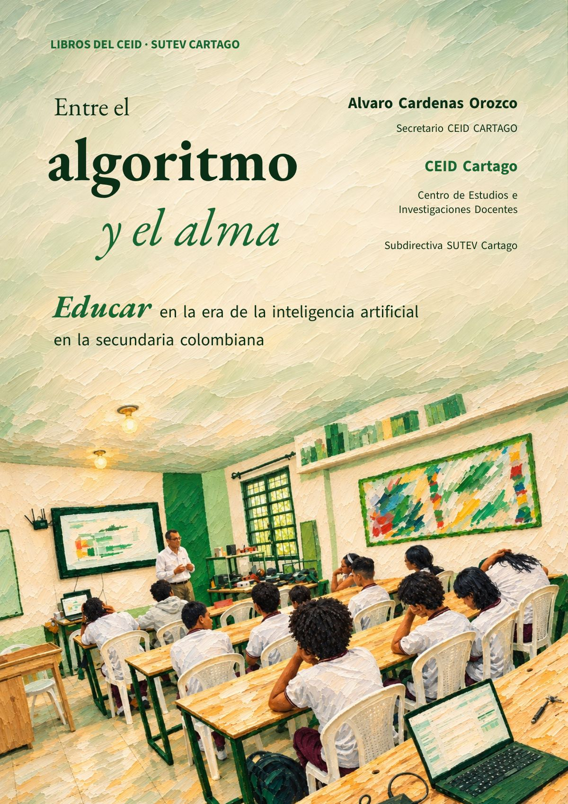

Entre el algoritmo y el alma
Lo que dicen los estudios, lo que está en juego y lo que podemos decidir en la escuela. Un libro del CEID para docentes de todas las áreas de 6.º a 11.º.
- 56 %de los estudiantes colombianos de 15 años usa chatbots cada semana para aprender (OCDE: 46 %)
- 53 %de los docentes de básica secundaria usó IA en su enseñanza en el último año (OCDE: 36 %)
- 14 añosla edad desde la cual el libro propone el uso directo, con cuentas institucionales

¿Dónde queda lo humano cuando el algoritmo resuelve, pero no comprende? Este libro del CEID Cartago responde a esa pregunta con evidencia verificada y la lleva a decisiones que un colegio puede tomar. Está escrito para docentes de todas las áreas de 6.º a 11.º, para leerlo solos o en círculos de estudio, y está actualizado al 6 de noviembre de 2026.
Tres partes, trece capítulos
- Lo que sabemos. Cómo produce y cómo falla un modelo generativo; por qué rendimiento no es aprendizaje, según los ensayos con escolares; y cuánto usan ya la IA los estudiantes y docentes colombianos.
- Lo que está en juego. Evaluar sin detectores; los datos de los menores; compañeros de IA, bienestar y deepfakes entre pares, con un protocolo para las primeras 24 horas; cultura, lenguas y desinformación; y el trabajo docente.
- Lo que decidimos. El marco que rige y el que falta (Ley 2626 de 2026, Directiva 01 del MEN, CONPES 4144); la política institucional de IA; enseñar con IA sin rendir el esfuerzo; Tecnología e Informática; y lo que propone el CEID.
Lo que muestran los datos
En un ensayo con cerca de mil estudiantes de 9.º a 11.º, quienes practicaron con un asistente sin salvaguardas mejoraron sus notas de práctica, pero rindieron un 17 % peor en el examen sin la herramienta. La IA ya está en las aulas colombianas, y entra sobre todo por la planeación.
Fuente: Icfes (2025), con datos de TALIS 2024.
Para trabajar en el colegio
El libro trae una guía para círculos de estudio de diez sesiones y seis anexos listos para usar: un modelo de política institucional de IA, la declaración de uso de IA del estudiante, una carta a las familias, una rúbrica de producción con IA evaluada por proceso, un glosario y una tabla de niveles de evidencia.
Cómo citar
CEID Cartago. (2026). Entre el algoritmo y el alma: educar en la era de la inteligencia artificial en la secundaria colombiana (Libros del CEID). Subdirectiva SUTEV Cartago. https://doi.org/10.5281/zenodo.24023354
Licencia CC BY-SA 4.0. Este libro se preparó con apoyo de inteligencia artificial generativa (Claude, de Anthropic, y Codex, de OpenAI); cada dato, cifra y cita se contrastó con su fuente.